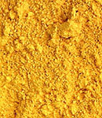
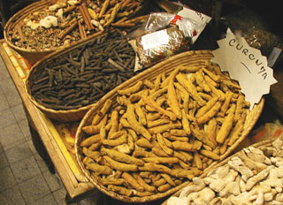
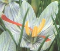
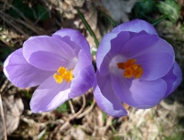
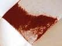

Les jaunes
[Lectures conseillées :
Le
jaune dans la langue française, Pourpre.com
La
couleur
jaune, Pourpre.com]
Couleur
symbolisant dans les temps anciens le bonheur et la prospérité, le jaune,
lors de l'avènement du christianisme, est subitement et durablement devenu
en Occident (puis dans le monde musulman mais dans une moindre mesure) le
stigmate de l'infamie, de la traîtrise et de la félonie, voire encore de
l'anormalité. Cela pour des
raisons très probablement religieuses au départ - les prêtres de
l'ancienne religion romaine auraient porté un vêtement sacerdotal de cette
couleur. Rome était d'ailleurs l'empire des couleurs détestées : le bleu
aussi, notamment, était honni, mais pour d'autres raisons (voir
texte).
Dans l'Asie d'aujourd'hui (en Inde, par exemple - voir
curcuma), comme
dans l'Europe antique pré-chrétienne, le jaune est encore synonyme
de bonheur. La Renaissance occidentale a provoqué le démarrage d'un lent processus
de réhabilitation de cette couleur, à peine achevé à ce jour.
Lecture conseillée :
Le jaune sur Pourpre.com
Assombrir
un jaune : pas si facile !
C'est même une opération étonnamment difficile. Le noir verdit le jaune. Alors
que faire ?
|
Sommaire
Jaunes
traités dans d'autres articles
-
Terres jaunes
-
Jaune de Naples
et jaunes d'antimoine (jaune Mérimée, jaune de Turner)
-
Jaunes de
cadmium
-
La laque de gaude
Assombrir
un jaune : pas si facile
Jaunes
divers
-
Jaunes
azoïques
-
Jaunes de
chrome
-
Auréoline, jaune
auréolin
-
Jaunes citron
-
Jaune de
Hansa
-
Jaunes
japonais
-
Jaunes
persans
-
Orpiment ou jaune
royal, jaune de Perse et orpin de perse, jaune d'arsenic
-
Jaune de
cobalt
- Jaune de zinc ou jaune bouton d'or
-
Jaune de baryum/d'outremer
-
Jaune de
baryte
- Jaune de strontiane
- Jaune minéral dit de turbith
-
Jaune de
momie
Jaunes
végétaux
-
Jaunes safran et
curcuma
[accès direct safran]
-
Jaune
indien
-
Gomme
gutte ou jaune du Cambodge
-
Le
quercitrin et le quercitron
-
Autres
jaunes végétaux |
Il existe deux solutions. La première est d'utiliser une terre brune.
Mais dans certains cas, le résultat est le même qu'avec le noir.
La seconde consiste à adjoindre au jaune sa couleur complémentaire, un violet,
avec le risque de le griser.
C'est donc souvent par un glacis sombre ou par un fond noir que
l'on assombrit un jaune.
Jaunes divers

*
les
jaunes azoïques. Imitations de jaune de cadmium ou de Naples laissés
pour compte à cause de leur coût, de leur toxicité ou de leur manque de
miscibilité... ou bien véritables "jaunes azo" annoncés
comme tels, ils ont les particularités propres à cette famille
chimique de pigments : très fort pouvoir colorant, permanence remarquable,
excellente stabilité en mélange, mais pouvoir couvrant assez faible. Ils
couvrent pratiquement toute la gamme des jaunes, associés ou non à d'autres
éléments.

*
les jaunes de chrome. Toxiques en
eux-mêmes et par leur association avec du
plomb (il s'agit de chromate de plomb, PbCrO4 pour un
jaune moyen selon François Perego), noircissant
facilement en présence de composants sulfurés insuffisamment lavés (toujours à cause du plomb)
ou d'autres éléments, ils ont été avantageusement
remplacés par de belles imitations
azoïques ou
autres après le court épisode des jaunes de zinc et
de baryum.
Voir Les chromes, mais aussi le
courrier d'un lecteur
évoquant l'affaire des jaunes de Van Gogh où l'altération du jaune de chrome est
abordée plus en détail.
*
l'auréoline ou
jaune auréolin (ou aurocoline ou sel de Fischer, anciennement jaune de cobalt, parfois nommé à tort jaune
indien). Du radical aur, or. Il s'agit de nitrite
de cobalt ou de nitrite-potassium de cobalt (PY40 - voir
famille des cobalts) - selon les
indications des fabricants. Selon André Béguin,
l'auréoline serait le résultat de la triple mise en contact de nitrite de potassium, d'un
sel de cobalt (on aimerait savoir lequel) et d'acide acétique. De fait,
signalons que le sel de Fischer présente normalement la formule suivante : K3[Co(NO2)6].
Le jaune auréolin serait stable en présence de soufre. André
Bégin précise que mal
préparé, il deviendrait brunâtre et inutilisable. Ordinairement, il est d'un
jaune orangé plutôt clair et assez subtil, mais on peut signaler certaines
variations, notamment dans les gammes d'aquarelles.
Légèrement transparent, il est d'une assez bonne tenue mais
relativement coûteux.
Lecture conseillée :
Le jaune auréolin sur Pourpre.com
*
les jaunes citron.
Transparents (sauf le
cadmium citron),
d'une teinte légèrement verdâtre, ils ne sont pas d'un usage très fréquent
dans le domaine professionnel car ils ne se prêtent guère aux mélanges
chromatiques qu'ils ont tendance à salir. Ils sont présents surtout dans les gammes
et boîtes de peintures à l'eau pour débutants et enfants. Anciennement, les
jaunes citron étaient composés de chromate de plomb fugaces et toxiques
quoique couvrants. Des imitations monoazoïques
(moins couvrantes) ainsi
que les "cadmiums citron" et les titanates de nickel (assez couvrants)
les ont totalement supplantés.
*
les jaunes de Hansa.
C'est un groupe de pigments azoïques relativement anciens,
inventés avant la première guerre mondiale en Allemagne par les laboratoires
Hoechst (groupe Hansa). Ils sont typiquement
composés, dans leurs versions actuelles, d'une base arylide 10G, un pigment
monoazoïque,
instance de PY3, mais leur architecture moléculaire extrêmement complexe peut
être altérée au point de donner lieu à des rouges. Encore moins poétiquement,
"ils dégorgent dans certains solvants organiques" selon
André Béguin.
Peu évoqués par les auteurs français, ils sont davantage cités par les
auteurs anglo-saxons, peut-être plus accoutumés à désigner des couleurs par des
noms d'entreprises. En terre francophone, on parlera plus globalement et plus
souvent de "jaunes
azoïques".
Ces couleurs vives sont fort présentes dans les gammes de peinture
acrylique - ce qui explique en partie la domination des références
anglo-saxonnes - et pratiquement absentes dans le domaine de la peinture à l'huile.
Ils sont colorants (du jaune verdâtre au jaune rougeâtre) et transparents, sauf une variété opaque possiblement enrichie
de blanc. Ils sont réputés sans grand danger sur le plan de la toxicité, sauf
selon certains auteurs peut-être soupçonneux.
Leur permanence, sans pouvoir être comparée à celle de pigments minéraux,
n'est pas médiocre.
Ils sont assez résistants à la chaleur, ce qui leur vaut d'être utilisés dans
des procédés thermiques de peinture industrielle.
*
les jaunes
japonais. Nous ignorons la composition, les caractéristiques et
l'histoire de ces couleurs. D'un point de vue chromatique et chimique, elles diffèrent peu
des cadmiums, des azos et autres jaunes habituels. La plupart du temps, les
versions actuelles sont azoïques.
*
les jaunes persans.
Aujourd'hui, cet intitulé commercial désigne des imitations de
l'orpiment,
voir ci-dessous.
 *
l'orpiment
ou jaune royal ou jaune de
Perse ou
orpin de Perse
*
l'orpiment
ou jaune royal ou jaune de
Perse ou
orpin de Perse
Du latin auripigmentum,
"couleur d'or" ou "pigment d'or"
"(...) garde-toi d'en souiller ta bouche, de peur que
ta personne n'en pâtisse.", écrivait Cennini.
Ce sont des pigments lumineux, d'emploi très ancien, composés d'une base de trisulfure
d'arsenic, existant à l'état naturel dans le Sinaï, l'Asie Mineure, l'Iran,
l'Albanie, la Saxe (mine de Gostar) et la Transylvanie notamment (en association avec
d'autres minéraux tels que le zinc), bien que
Cennini, qui décrit "un jaune plus vague et plus semblable à l'or
qu'aucun autre", évoque un procédé "véritablement toscan". Selon les
sources, l'orpiment tire sur l'orangé ou le doré (un consul romain aurait essayé
d'en extraire de l'or en le calcinant) - en fait il pourrait se décliner du
jaune citron au rouge orangé - et serait, selon certains, opaque et éclatant,
mais aussi stable en mélange sauf en présence de plomb et de cuivre.
Il semble que les différentes préparations donnent effectivement des couleurs
variables, l'orpin (de auripigmentum), plus ou moins assimilé à la
variété la plus naturelle, constituant en théorie la nuance la plus claire. Les
couleurs obtenues artificiellement semblent se rapprocher davantage du
réalgar. Mais au-delà de ces considérations,
l'historien latin Vitruve nommait déjà ce pigment ou ces pigments, de manière
sans doute plus réaliste, arsenicum et de fait, les "plaques
feuilletées", les "écailles" souvent mentionnées pas les auteurs donneraient "en
brûlure une odeur pernicieuse d'ail" (Le Pileur d'Apligny, cité par
André Béguin, t. 2, p. 698) caractéristique de
l'arsenic.
Le fameux Pileur d'Apligny mentionne différentes variétés d'orpiment, variant
du jaune au rouge : la variété jaune, resplendissante, tirée notamment "des
environs de Smyrne", celle qui est "l'orpiment commun des boutiques",
assez belle, et une variété étrange, sorte de réalgar combiné
au cobalt (ce qui peut susciter questionnement), pouvant arborer différentes
couleurs en fonction de la quantité de soufre qui lui est adjointe lors de la
préparation (le soufre étant censé faire rougeoyer la couleur).
Signalons aussi une variété préparée sur la base d'un composé sulfuré du
baryum, mentionné également par André Béguin.
On ne saurait dire clairement si cette préparation - semblant relever d'une
autre chimie - a un réel rapport avec les couleurs arsénieuses que nous venons
d'évoquer.
L'orpiment serait à déconseiller pour toute peinture
murale pour cause de noircissement à l'air. Cennini évoquait déjà cette
problématique, ce qui n'a pas empêché l'utilisation d'orpiment même jusqu'au XVIIIème
siècle bien que dès l'Antiquité, cette couleur ait été exclue de la palette des
décorateurs.
Du moins d'une partie d'entre eux car très curieusement, elle ne disparaîtra à peu près qu'au-delà du XIXème, lors de
l'apparition des couleurs au cadmium. Elle serait
encore utilisé à ce jour en peinture traditionnelle chinoise et on la trouve
encore aujourd'hui
dans les catalogues de certains fournisseurs occidentaux. L'emploi de l'orpiment
en peinture à la cire ne poserait cependant pas de problèmes de noircissement
(Comte de Caylus et M.-J. Majault, Mémoire sur la peinture à l'encaustique et
sur la peinture à la cire, cité par
André Béguin,
t. 2, p. 698), information non confirmée.
Question toxicité, nous sommes un peu dans le flou. La seule chose à dire,
c'est qu'il faut éviter l'oxydation de ce pigment. Il semblerait, selon
certains auteurs, qu'il soit extrêmement toxique (mortel)
même sans oxydation mais nous ne sommes pas en mesure de confirmer cette
information pour le moment, même si la présence d'arsenic ainsi que la
recommandation de Cennini peuvent évidemment
incliner à une grande circonspection.
Son emploi actuel se ferait
surtout par quantités minimes sous contrôle industriel et peut-être en
restauration. Dans le passé, après un
usage avéré en Égypte et en Inde antiques, son emploi s'était généralisé au long
de l'Antiquité. Au Moyen-âge il servait à réaliser des
enluminures. C'était alors l'un des deux jaunes, l'autre (giallolino)
provenant en premier lieu de la gaude.
On signale une synthèse toute différente et assez ancienne (médiévale) de
ce pigment à partir de curcuma (voir plus loin). Cette information n'est pas confirmée. Il
pourrait s'agir d'une sorte de contrefaçon ou de substitut.
Lecture conseillée :
L'orpiment sur Pourpre.com
Mentionnons pour terminer l'existence d'un tout proche
jaune d'arsenic, qui semble atteindre certains sommets dans le monde
pigmentaire. André Béguin l'évoque en ces
termes (tome 2, p. 698) : "[c'est] une couleur très vénéneuse [...]
noircissant à l'air. Il modifie les pigments métalliques avec lesquels il est
mélangé ou qu'il côtoie. [... Il] sert d'épilatoire en tannerie. On s'en est
servi, au siècle dernier, pour peindre les marbres, dissous dans l'ammoniac ; la
peinture pénétrait le marbre et l'air faisait foncer le ton peu à peu."
L'arsenic dilué dans l'ammoniac, voici une peinture - ou peut-être plutôt une
teinture - qui aurait pu inspirer Agatha Christie et d'autres auteurs.
*
le jaune de cobalt
est clair et orangé.
Il est devenu introuvable dans les gammes proposées par les fabricants,
probablement pour des raisons de prix (les couleurs au cobalt
sont très chères), mais sûrement pas uniquement. Il disposait d'une bonne réputation de
non-toxicité. Enquête en cours.
--> enquête effectuée, il a simplement changé le nom : c'est le
jaune auréolin.
*
Le jaune de zinc.
Lorsque Leclaire et Barruel (cf. jaune de baryum)
créèrent ce pigment en 1809, ils l'intitulèrent jaune bouton d'or. Pas
sans motif : ils avaient en effet cherché à donner un "aspect doré" à ce nouveau
pigment censé remplacer ou du moins concurrencer les nombreux jaunes contenant
du plomb (enfin reconnu toxique), qui émergeaient à la même époque.
Les variations dans les préparations des jaunes de zinc permettent d'obtenir
différentes teintes (proches) et différents pH.
Leur utilisation en peinture artistique est pratiquement abandonnée car leur
couleur est instable, variante. En peinture décorative (où leur emploi n'a
pas été négligeable aux XIX et XXème siècles), le jaune de zinc ne
fait plus le poids par rapport aux synthèses réalisées déjà depuis plusieurs
décennies.
La toxicité des jaunes de zinc est faible comparativement aux couleurs au plomb et c'est bien ce
qui a fait le succès de cette invention. Cependant, elle ne serait pas nulle à
cause de la présence de chrome (élément toxique dans
certains états) dans sa formulation, articulée autour d'une base de chromate
de zinc (d'après nos informations actuellement non confirmées).
Mentionnons l'utilisation de ce pigment dans la fabrication de peintures
antirouille.
*
le jaune de baryum
Ce pigment a parfois été nommé jaune d'outremer. André Béguin souligne
très
pertinemment que cette appellation est parfaitement impropre sur le plan
chimique. En effet, on ne voit pas le rapport entre les
outremers, à base d'aluminium et de silicium
notamment, et la formulation normale du jaune de baryum, qui est la suivante :
chlorure de baryum + chromate double de potassium et de sodium
(informations André Béguin).
[Note : cette formulation semble n'avoir guère
de rapports avec
le baryte et le sulfate de baryum.
Cf. jaune de baryte]
Ses inventeurs, Leclaire et Barruel (début XIXème siècle),
avant de s'intéresser au baryum, ont créé le jaune de
zinc qui échoua à remplacer les jaunes contenant du plomb, du moins dans
le domaine de la peinture artistique.
 Gavé
de baryum et de chrome,
le soi-disant "jaune d'outremer" est un pigment toxique, et c'est peut-être
là qu'il faut chercher l'explication de ces étonnants changements de noms.
Céruse, blanc d'argent, cinabre, vermillon, et nombre d'autres couleurs
empoisonnantes ont en effet une tendance marquée, depuis l'Antiquité, à
se "refaire une identité" régulièrement pour faire oublier un passé trop
lourd. Ces éléments posés, on peut faire une supposition : le terme "jaune
d'outremer" pourrait bien sembler d'autant plus parlant (concernant les
réelles intentions de ses promoteurs) qu'il est farfelu, sans relation avec
la réalité et
surtout... attractif et rassurant.
Gavé
de baryum et de chrome,
le soi-disant "jaune d'outremer" est un pigment toxique, et c'est peut-être
là qu'il faut chercher l'explication de ces étonnants changements de noms.
Céruse, blanc d'argent, cinabre, vermillon, et nombre d'autres couleurs
empoisonnantes ont en effet une tendance marquée, depuis l'Antiquité, à
se "refaire une identité" régulièrement pour faire oublier un passé trop
lourd. Ces éléments posés, on peut faire une supposition : le terme "jaune
d'outremer" pourrait bien sembler d'autant plus parlant (concernant les
réelles intentions de ses promoteurs) qu'il est farfelu, sans relation avec
la réalité et
surtout... attractif et rassurant.
Jaune clair qu'André Béguin qualifie d'anémique, ce pigment est
pratiquement abandonné car il n'est pas seulement toxique : il verdit en
présence de lumière et présente des incompatibilités avec certaines couleurs
(d'après Bontinck cité par A. Béguin).
*
le jaune de baryte.
Nous en avons
vaguement entendu parler mais nous manquons d'informations à son sujet. Il
s'agit peut-être d'une confusion avec le jaune de baryum, ci-dessus. Merci
d'avance de nous communiquer toute
connaissance à ce sujet.
* le
jaune de strontiane. Bien vif mais fugace et coûteux, il est peu
courant. Voir Strontiane. Le strontium
n'est pas, en effet, un élément courant dans notre environnement.
Dans le domaine industriel, le jaune de strontiane serait préparé en fait
sans strontiane, à l'aide d'un sel azoté de strontium et de sels plus
communs.
* le jaune
minéral, dit jaune Turbith. L'appellation "jaune minéral" est
d'une grande imprécision (cf. Jaune
Mérimée). C'est un jaune de mercure obtenu par
l'emploi d'acide sulfurique et d'eau. Il n'est d'ailleurs pas soluble dans
l'eau ni dans l'alcool et revient très cher sans être pour autant permanent.
Ce "jaune citron (...) vénéneux" (cf.
André Béguin, T.2 p.699) n'a clairement pas encore trouvé d'emploi.
*
le jaune de momie.
Initialement utilisé comme remède, ce sordide et abominable mélange obtenu dès
l'Antiquité par broyage des corps momifiés et des bandelettes a été mis à
profit par les peintres à la Renaissance. Il disparut au XIXème siècle.
(source : Anne Varichon)
Jaunes d'origine végétale
*
les jaunes
dit jaunes safran.
Il en existe deux "variétés" si l'on peut dire (car en fait il n'existe qu'un
seul véritable jaune safran, voir point B) :

A. La première, la plus courante, est tirée des rhizomes râpés, séchés et bouillis du
curcuma
(curcuma longa, herbe vivace de la famille du gingembre -
Zingibéracées
-, poussant en Asie, en Océanie et en Amérique centrale, colorant puissant), et non du crocus
(véritable safran, voir
plus loin). Les termes de "jaune safran" et de "safran
des Indes" sont donc impropres en ce qui le concerne.
Certains auteurs le confondent aussi avec le souchet (cyperacées),
herbacée sauvage de nos régions qui ne donne pas une épice ni des
pigments mais une "amande de terre".
Le curcuma (voir photo ci-dessus) ne serait
guère stable en mélange dans la peinture à l'huile selon certaines sources
non confirmées. Il manquerait aussi de permanence. Merci de nous
faire part de votre expérience picturale de ce produit.

En teinturerie, le curcuma est référencé petit teint
notamment à cause de son peu de permanence et de résistance au lavage mais
aussi parce qu'il est sensible à l'acidité de l'eau. Il virerait vers le rouge
en présence d'eau acide, information non confirmée par nos
expériences. Celles-ci ont montré par contre une tendance à virer vers un
jaune plus froid et clair en présence d'une eau alcaline. Ces données - à
confirmer donc toujours par un test préalable - peuvent être mises à profit
lors de la teinture ou du liage.
On peut parfaitement utiliser l'épice en poudre que l'on trouve maintenant
assez facilement en Europe (épiceries orientales, supermarchés, grands
magasins) et la lier avec un liant
aqueux.
En teinturerie, le curcuma est particulièrement facile à utiliser car il
s'agit d'un colorant substantif. Il suffit
d'immerger le textile dans une eau chargée d'un poids de poudre équivalent
à celui du tissus à teindre. Faire bouillir une heure, laisser refroidir
puis rincer avec une eau que vous pouvez rendre acide ou alcaline.
Le curcuma n'est pas réservé à la teinture ou à la peinture, même
corporelle. Il est aussi utilisé pour colorer
des plats, notamment en Inde où il est considéré comme
propitiatoire (mariage, bonheur, sexualité, fertilité, prospérité, comme
dans toute l'Asie) et
sert entre autres à teinter les mets des fêtes de mariages (voir
aussi coloration des mets à Bagdad). Par
ailleurs, en Polynésie voire jusqu'en Mélanésie, le curcuma connaît
beaucoup d'usages, sacrés ou profanes : peinture corporelle, teinture
sacrée, parfum sacré, remède médical, et même, il serait prisé
(inhalé) par certains chefs polynésiens. (source Anne
Varichon)
 B.
La seconde variété provient bien des stigmates (terminaison des pistils,
contenant
le pollen) orangés et colorants du Crocus sativus
(voir photo de gauche), à distinguer des autres variétés de la plante comme par
exemple speciosus ou vernus (à droite) qui n'ont pas ces stigmates. Ceux-ci sont
séchés et réduits en poudre pour obtenir l'épice, le véritable safran.
Crédit photo
Jean Mascolo

A cause de sa rareté et de la difficulté à le prélever, le
safran coûte
plus cher que l'or au kilo. Curcuma et carthame auraient donc été
utilisés par des falsificateurs, jusqu'à aujourd'hui.
Denrée de luxe, il a été évidemment très recherché depuis la nuit des
temps jusqu'à la Renaissance (apparition de nouveaux colorants). Durant ce
laps de temps, il fut un enjeu économique - et l'est encore, mais davantage
pour ses
caractéristiques gustatives. Le monde musulman l'implanta
notamment en Espagne où il est encore massivement cultivé et d'où il se répandit
progressivement vers le Nord en Europe. Le terme "safran"
proviendrait d'ailleurs de l'arabe za'farân (donnant asfar,
signifiant jaune), d'origine perse (il signifie également jaune
en persan)
alors que crocus provient du grec.
Dans l'univers du bouddhisme et de l'hindouisme, il est très important.
C'est lui, par exemple, qui teinte souvent les tenues des religieux et le
maquillage des sâdhus. Dans la Rome antique, avant le christianisme, il
eut un succès certain. Il habillait les prêtres, comme en
Asie, mais aussi les mariés (riches), comme le curcuma
en Inde. Symbole de pouvoir, il fut progressivement supplanté en tant que
tel par la pourpre en Occident. Par contre, à Bagdad,
aux tous premiers temps de l'Islam, le safran a coloré les mets comme le
curcuma en Inde (voir coloration
des plats indiens par le curcuma).
Le safran a surtout été utilisé pour ses propriétés gustatives et tinctoriales. Nous ne
disposons pas d'informations concernant son usage en peinture.

En fait, comme le sait tout gastronome et comme le confirme la photo
ci-contre, le safran tire nettement sur le rouge, plus ou moins sombre selon
les variétés, donnant en cuisine un riz
orangé, tandis que le curcuma est naturellement plus jaune.
L'orangé est la couleur la plus récemment reconnue. Le safran a peut-être
été classé parmi les jaunes à défaut de cette catégorie (à ce sujet, lire
l'article Les orangés). Cependant, une
certitude : à l'état pur c'est un rouge, au sens contemporain de ce mot.
Notons pour terminer que le safran aurait le pouvoir de colorer certains
collagènes.
Lecture conseillée :
Le
safran sur Pourpre.com
*
le
jaune indien. On a affirmé un peu n'importe quoi sur lui.
Disons donc simplement que
* selon certains il est produit à partir des
feuilles du mangoustanier (Garcinia kola
heschel ?), arbre de la famille des
Clusiacées guttifères. Elles
sont mises à macérer dans l'urine
décomposée de bovidés ou, peut-être, dans certains cas, de chameaux. Le
mélange est mis à sécher en boules ; le pigment est extrait de
l'intérieur des boules. Voir La
gomme gutte ou jaune du Cambodge, ci-dessous.
* selon d'autres, il serait recueilli dans l'urine ou la bouse de vaches
nourries avec des feuilles de manguier (Anacardiacées) et volontairement assoiffées (d'où,
dit-on, une interdiction au début du XXème siècle, information
non confirmée). On laisserait les excréments se déposer. Le reste du
procédé de fabrication serait identique à celui qui précède.
Foin des polémiques stériles : ce qui semble caractériser cette couleur est
qu'elle contiendrait du magnésium et
un composé organique azoté de type xanthine
dérivé, de toute manière, de l'urine (lire passage
in L'ammoniac).
Il n'est absolument pas exclu que
différents procédés aient été employés. Par exemple, le premier ci-dessus
a pu se substituer au second lors de l'interdiction de celui-ci.
Quelques rares auteurs britanniques semblent se gausser de cette couleur à cause
de son procédé de fabrication. C'est oublier le caractère sacré
de certains animaux dans l'Union Indienne. C'est oublier aussi que des
couleurs occidentales ont été préparées de manière bien plus repoussante. Par ailleurs, arrivé en Europe
au XVIIème siècle, le jaune indien y aurait supplanté
avantageusement la gaude et le
curcuma (voir jaune safran), plus
fugaces.
Nous n'avons pas testé à ce jour
l'original de ce produit (merci de nous
faire part de votre expérience à ce sujet).
Les jaunes indiens disponibles en Occident aujourd'hui sont le plus souvent des imitations.
*
la gomme gutte ou
jaune du cambodge. Le terme de "gomme
gutte" (gutta gummi) fait référence au type d'arbres (Clusiacées guttifères) dont
colorants
et gomme sont extraits. Des colorants auraient été tirés de l'écorce - et non du
latex - alors que la gomme bien connue (voir Gomme
gutte in Autres résines)
est la sève du Garcinia morella, guttifère poussant dans la péninsule
indochinoise et au Sri Lanka. En Europe, des pigments ont été tirés de la gomme
notamment par dissolution dans la térébenthine.
Aujourd'hui, ce jaune ou plutôt ces jaunes sont utilisé en aquarelle, plus rarement en
peintures à l'huile et à l'acrylique. Mais trop fugace, l'original est souvent accompagné
dans les nuanciers d'une version
plus moderne, une imitation plus permanente.
Certaines sources évoquent des utilisations en
glacis sans précisions supplémentaires, ce qui n'est peut-être pas un
hasard. Pourquoi existe-t-il tant d'imitations de la "gomme gutte" (dont une intitulée "New Gambodge") ?
On peut remarquer beaucoup d'imprécisions chez les auteurs sans parler des
écarts chromatiques chez les fabricants. Les imitations industrielles comme les
produits présentés comme originaux ont en effet des couleurs fort différentes allant d'un jaune sale à un jaune orangé assez
vif. Il règne une certaine confusion peut-être liée aux éléments suivants :
le
jaune indien est tiré des feuilles d'un autre arbre de la même
famille (Guttiféracées). Il est l'objet de certaines réticences - et confusions
encore une fois) dues à son mode de fabrication. Peut-être y a-t-il eu
assimilation entre jaune indien et jaune de gomme gutte... et peut-être n'est-ce
pas sans raison car il n'est pas exclu que l'on ait utilisé les feuilles,
l'écorce et le latex d'arbres très proches pour fabriquer des gommes et des
colorants selon des méthodes variées. Par exemple, qui sait si l'on n'a pas
fabriqué des sortes de jaunes indiens à l'aide de feuilles de Garcinia morella ?
Ou de la gomme avec le latex de Garcinia kola heschel ? Il n'est en effet pas
rare dans ce domaine que l'appellation d'un produit ait été usurpée par des
marchands et des trafiquants falsificateurs.
*
le quercitrin.
L'étymologie de ce terme dérive du latin quercus, chêne, et de
citron. Il s'agit en effet d'un colorant jaune tiré de l'écorce du quercitron,
chêne d'Amérique du Nord. Il supplanta progressivement la gaude
avant d'être a son tour remplacé par des pigments synthétiques.
*
les
autres
jaunes végétaux. Ils sont innombrables car presque tout végétal
est susceptible après traitement de teinter une surface en jaune. Chaque peuple
a utilisé des procédés et ingrédients différents. Peu d'entre eux sont
éclatants : il donnent le plus souvent un ton mêlé de gris ou de brun, à la
différence des jaunes cités ci-dessus. Ceux-là, certes, ne sont pas les
seuls, mais ils associent à leur beauté une facilité d'emploi qui a fait leur
succès depuis des temps anciens. Citons quand même
* le jaune de sumac. Cette substance a aussi une tout autre utilisation :
purifiée, c'est le
liant de la laque japonaise KI-URUSHI.
Brute, c'est la sève brun foncé, presque noire, de l'arbre URUSHI. Cette sève est utilisée
comme colorant. Son nom est ARAMI-URUSHI
* l'écorce de grenade
* le carthame, qui donne surtout un rouge
et un rose soutenus. Comme indiqué ci-dessus, il aurait largement été
utilisé pour fabriquer un faux jaune safran, souvent en mélange avec du curcuma
* le pied-d'alouette.
Retour
début de page